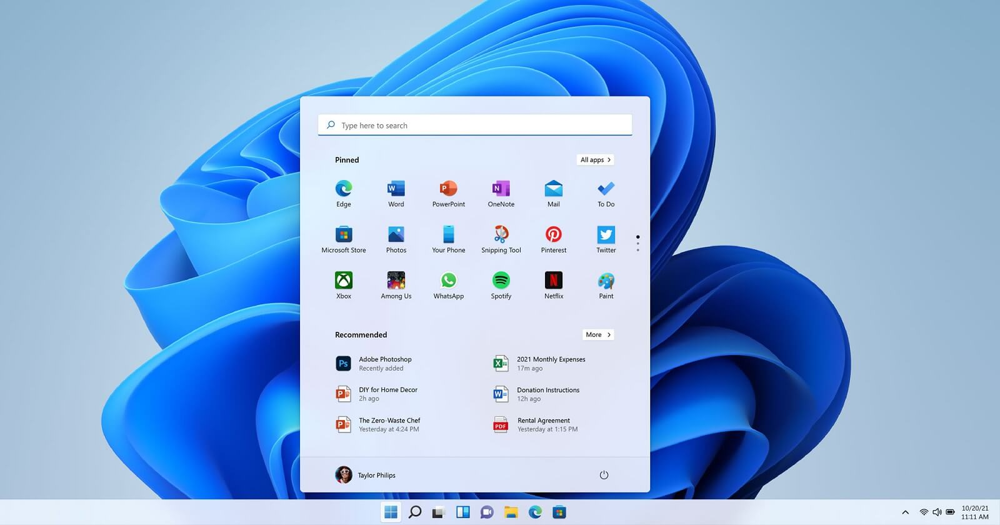
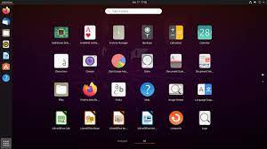

Website
Website
Operating system atau OS pada komputer adalah perangkat lunak atau software yang berfungsi sebagai pengatur semua sumber daya yang terdapat pada komputer. Dalam pelaksanaannya, terdapat beberapa macam OS.
Secara umum, sistem operasi atau OS adalah salah satu software atau perangkat lunak yang tugasnya bertanggung jawab mengatur dan mengontrol kerja hardware atau perangkat keras serta menjalankan software atau aplikasi di dalam sebuah sistem komputer.
Sistem operasi komputer digunakan untuk menghubungkan perangkat lunak (software) dengan perangkat keras (hardware). Sistem operasi komputer diperlukan supaya kinerjanya berjalan dengan baik. Setiap komputer memerlukan sistem operasi agar bisa dijalankan atau digunakan.
Untuk itu, di dalam komputer terdapat macam OS yang akan membantu anda menyelesaikan pekerjaan supaya lebih cepat dan mudah.
Pengertian sistem operasi komputer berarti komponen dan metode kerja yang ada dalam komputer. Tujuannya untuk menghubungkan manusia dengan komputer atau perangkat lunak dengan perangkat keras. Sistem operasi dalam bahasa Inggris dikenal sebagai Operating system. Sistem operasi menjadi hal yang paling mendasar dan harus ada saat akan menjalankan komputer.
Sementara, menurut M Suyanto, pengertian sistem operasi adalah sebuah sistem yang terdiri dari beberapa komponen software atau perangkat lunak yang mempunyai fungsi untuk mengontrol semua kegiatan yang telah dilakukan oleh komputer.
Read more
Jenis - Jenis Operating Sistem
 Microsoft windows merupakan salah satu macam OS yang mungkin sudah dikenal semua orang. Microsoft windows adalah sistem operasi yang dikembangkan oleh Microsoft dengan menggunakan antar muka pengguna grafis atau GUI yang membuat pengguna dapat berinteraksi dengan komputer menggunakan tampilan visual yang sangat memudahkan pengguna.
 Mac OS adalah salah satu macam OS yang dibuat oleh Apple. Sistem operasi ini sudah terpasang pada semua komputer Macintosh (disebut Mac) baru. Banyak orang lebih menyukai tampilan sistem operasi Mac OS X daripada Windows walaupun harga komputer Apple cenderung lebih mahal. Kelebihan sistem operasi Mac OS adalah lebih stabil, tampilan antarmuka cocok untuk kebutuhan multimedia, memiliki keamanan tinggi dan tidak mudah diretas, serta aman dari virus. Sementara itu, kekurangannya adalah harga yang relatif mahal, kurang optimal untuk gaming, dan tidak open source.
Mac OS adalah salah satu macam OS yang dibuat oleh Apple. Sistem operasi ini sudah terpasang pada semua komputer Macintosh (disebut Mac) baru. Banyak orang lebih menyukai tampilan sistem operasi Mac OS X daripada Windows walaupun harga komputer Apple cenderung lebih mahal. Kelebihan sistem operasi Mac OS adalah lebih stabil, tampilan antarmuka cocok untuk kebutuhan multimedia, memiliki keamanan tinggi dan tidak mudah diretas, serta aman dari virus. Sementara itu, kekurangannya adalah harga yang relatif mahal, kurang optimal untuk gaming, dan tidak open source.
 Linux juga cukup sering digunakan oleh pengguna komputer, meski jumlahnya tidak sebanyak sistem operasi Windows. Linux memungkinkan penggunanya untuk melakukan modifikasi untuk meningkatkan kinerja sistemnya. Kelebihan utama dari macam OS Linux ialah bisa dimodifikasi sesuai kebutuhan, tetapi hal ini hanya bisa dilakukan oleh orang yang paham teknologi. Untuk kelemahan utamanya ialah cara instalasinya lebih susah dibanding Windows